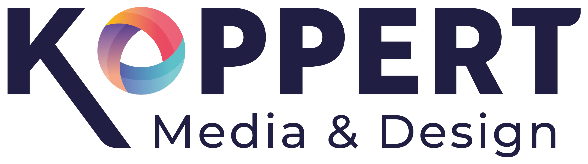
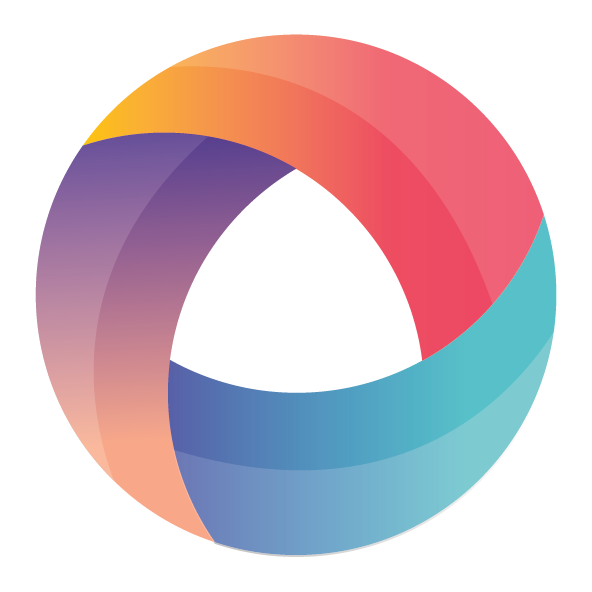

Projecten
Over mij
Home
›
Projecten
Van concept tot code
Web Design & Development
Visuele identiteit vormgeven
Logo ontwerp

Creatief werk & experimenten
Overige
Gebruiker centraal
UX / UI Design
 Gebruiker centraal
Gebruiker centraal
Gebruiker centraal
Gebruiker centraal